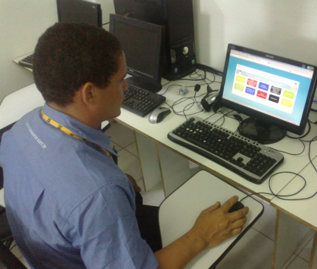
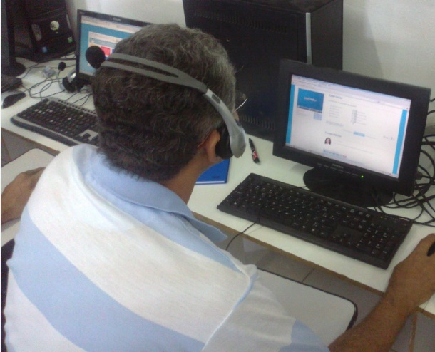

Informe seu login e senha:
Informe seu login e senha:
OBJETIVO DO PROJETO
Promover a qualificação de 800 (oitocentos) taxistas em Qualidade no Atendimento e nos idiomas de Inglês e Espanhol. Utilizar a tecnologia de Ensino a Distância e Presencial para orientar o taxista sobre a forma de bem receber os turistas em Pernambuco, agregando valor a esse serviço de transporte, oferecendo ao visitante um serviço diferenciado.
ÁREAS DE ABRANGÊNCIA
Taxistas oriundos das cidades de Recife, Jaboatão dos Guararapes, Olinda, Ipojuca (Porto de Galinhas) e do Arquipélago de Fernando de Noronha.
PARA PARTICIPAR
Taxista procure sua Cooperativa, Sindicato ou uma das Entidades acima e solicite sua matrícula.
- 
- 